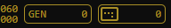

Menu Buttons
Display & ToolsMouse
Wheel: zoom in/out Middle button: panGame panel
 Game/Avg. speed Generation Screen (visible) populationStorage
Game settings and patterns are stored locally.Rules - B3/S23
Any live cell with 2 or 3 live neighbours lives on to the next generation. Any dead cell with exactly 3 live neighbours becomes alive (reproduction). Any live cell with fewer than 2 live neighbours dies (underpopulation). Any live cell with more than 3 live neighbours dies (overpopulation).More info
Cellular Automata ConwayLife LifeWiki CatagolueFernando Coelho - 2020